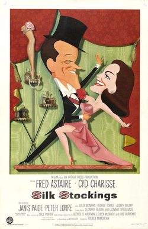

Silk Stockings

Starring: Fred Astaire, Cyd Charisse, Janis Paige
Director: Rouben Mamoulian
Writer: Abe Burrows, Leonard Spigelgass
Producer: Arthur Freed
Silk Stockings is a 1957 American musical romantic comedy film directed by Rouben Mamoulian and starring Fred Astaire and Cyd Charisse. It is based on the 1955 stage musical of the same name, which had been adapted from the film Ninotchka (1939). The film received Golden Globe Award nominations for Best Film and Best Actress (Charisse) in the Comedy/Musical category.
Trivia
- Based on Silk Stockings (musical).
- The musical Silk Stockings originated from Melchior Lengyel's story Ninotchka, which in turn was adapted into a 1939 film starring Greta Garbo.
- The musical premiered on Broadway in 1955, and during its run, producer Arthur Freed decided to acquire the screen rights, making it his first independent film project.
- Since MGM held the right of first refusal as it had owned the 1939 film, Freed purchased the rights for $300,000.
Filming Locations
- The psychological and dramatic development existed only in the dances." Principal photography began on November 7, 1956, and wrapped on January 31, 1957.
Previous Showings
13 Runs • 6 Festivals
All runs on record (13):
- July 22, 1987w/ Daddy Long Legs
- March 11, 1988w/ Funny Face
- December 30, 1990 - January 3, 1991w/ Funny Face
- February 13 - 16, 1993w/ The Band Wagon
- July 22 - 25, 1995w/ Night and Day
- March 12 - 15, 1998Fred Astaire ~ Silent Movie Saturdaysw/ Royal Wedding
- November 20 - 22, 2002Fall Folliesw/ Three Little Words
- January 21 - 23, 2005w/ Daddy Long Legs
- July 16, 2007Summer 2007, including Films Starring Fred Astairew/ Easter Parade
- July 28 - 30, 2010Summer 2010w/ The Belle of New York
- April 11 - 12, 2013The 1950sw/ High Society
- September 5 - 8, 2015w/ Anastasia
- July 24 - 26, 2018Summer 2018w/ Ninotchka